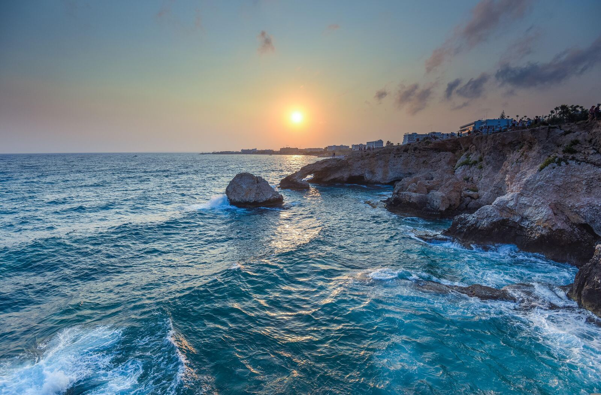
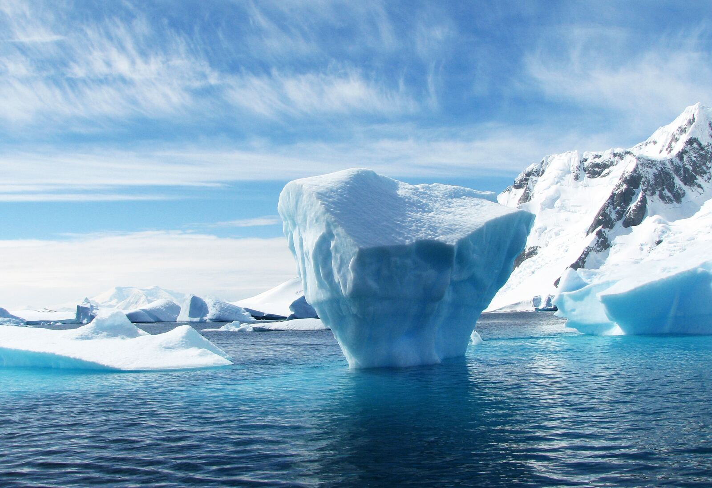
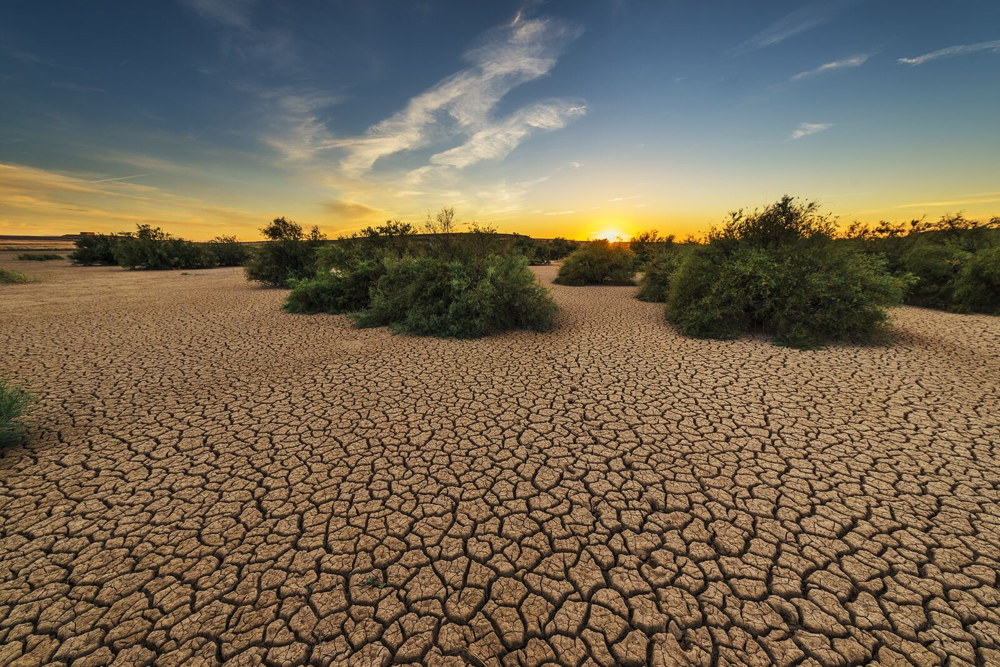
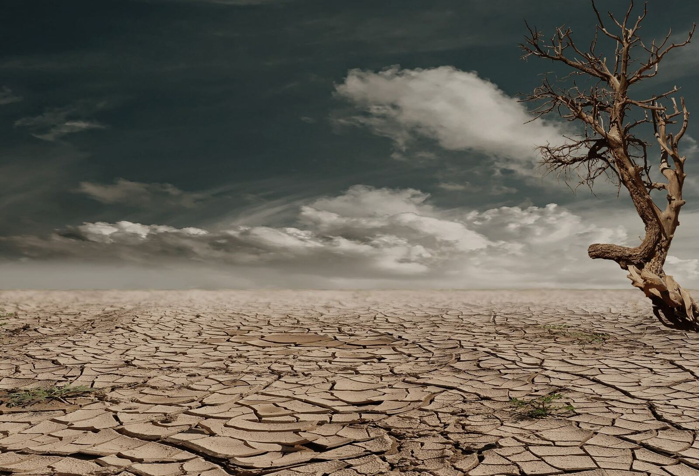
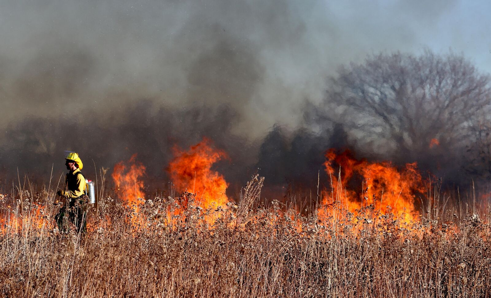

Every one of the last ten years has broken a heat record. This is a short account of how that happened -- told the way a reporter would tell it, numbers first.

In 1896, a Swedish scientist worked out that burning enough coal would eventually warm the planet. Almost nobody believed him. It took about a century for the data to catch up.
Global average temperature has risen roughly this much since the late 1800s. It sounds small. It isn't -- the difference between now and the depths of the last ice age was only about five degrees.

Every year for the last decade, someone has had to write the sentence "this was the hottest year on record." At some point that stops being news and starts being a pattern.
Most of the ten hottest years ever measured happened in roughly the last ten years. That's not natural variation -- variation goes up and down. This has mostly gone one way.
An RTI reply once told us that "growth and decay of islands is a natural process." The island didn't need the explanation. It was already gone.
Two islands in the Hooghly estuary, Lohachara and Bedford, have vanished completely. A third, Ghoramara, has lost more than half its land and keeps losing about 36 metres of coastline a year -- ever since a protective embankment planned in 1981 was left unfinished.

Scientists talk about a "carbon budget" much like an accountant talks about a budget -- a number you're not supposed to go past. At the current rate of spending, we're close to broke.
The IPCC's estimate for the remaining budget -- for a reasonable shot at holding warming near 1.5°C -- is small enough that a few more years of emissions at today's pace could use up what's left.

This isn't the last hot summer. It's just the coolest one we've got left, for now.
What happens after this is still being decided -- in budgets, elections, and boardrooms, mostly by people who will never read this page. If it reached you anyway, send it on. Not as a warning. Just so someone else has read it too.